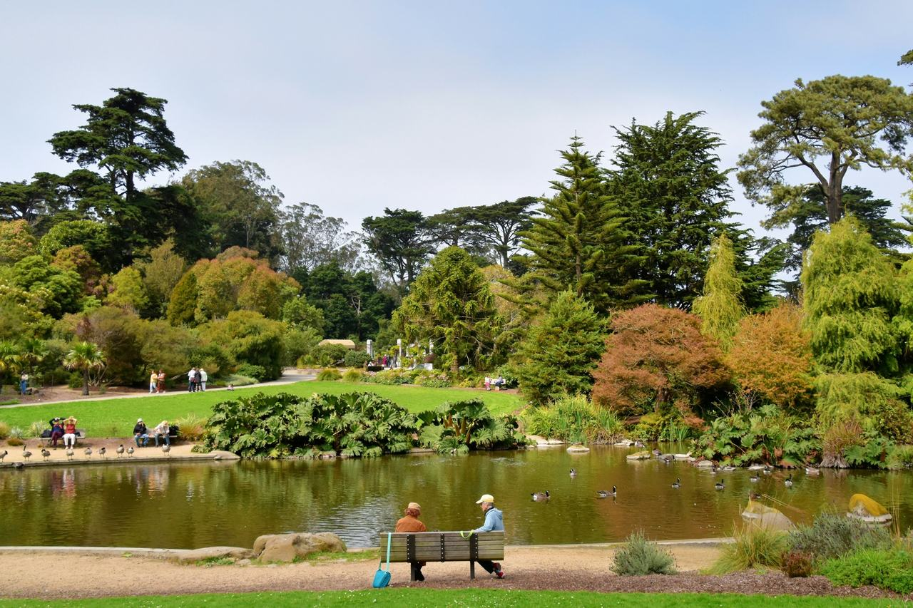

Golden Gate Park
The park between Stanyan Street and the Great Highway, filed as its own neighborhood because the city's analysis neighborhoods treat it as one. Its places are the ones the Recreation and Park Department's facility inventory names inside the park — gardens, lakes, museums, windmills, stadiums — each with a page of its own; the land under them is one parcel, whose assessor and permit record is its page on Fulton Street.

Map
Named buildings and landmarks

Streets documented so far
- Fulton Street
1 building; 1 in the Golden Gate Park Historic District.
Parks and public spaces
- Academy of Sciences
Arts and activity center. - AIDS Memorial Grove
Ornamental garden, 6.8 acres. - Alvord Lake
Water body, 6,098 sq ft. - Angler's Fly Casting Pools
Water body, 2.1 acres. - Anglers Lodge
Arts and activity center. - Archery Field
Archery field, 2.0 acres. - Arizona Garden
Ornamental garden, 24,394 sq ft. - Beach Chalet
Retail space. - Big Rec Ball Fields
Ball field, 7.8 acres. - Bison Paddock
Historic structure, 11.6 acres. - Blue Heron Lake
Water body, 15.7 acres. - Blue Heron Lake Boathouse
Retail space. - Bowling Green
Bowling green, 1.9 acres. - Camellia Garden
Ornamental garden, 4.9 acres. - Carousel Building
Retail space. - Chinese Pavilion
Historic structure. - Conservatory of Flowers
Arts and activity center. - County Fair Building
Arts and activity center. - Dahlia Garden
Ornamental garden, 3,485 sq ft. - De Young Museum
Arts and activity center. - Disc Golf Course
Disc golf, 14.5 acres. - Dutch Windmill
Historic structure, 16,553 sq ft. - Elk Glen Lake
Water body, 1.7 acres. - Equestrian Center
Equestrian facility, 1.9 acres. - Fuchsia Dell
Ornamental garden, 1.3 acres. - Golf Course
Golf facility, 14.5 acres. - Japanese Tea Garden
Ornamental garden, 2.4 acres. - Kezar Pavilion
Arts and activity center. - Kezar Stadium
Stadium. - Koret Children's Quarter
Children's play area, 29,185 sq ft. - Lily Pond
Water body, 19,166 sq ft. - Lloyd Lake
Water body, 1.4 acres. - Mallard Lake
Water body, 1.4 acres. - McLaren Lodge
Administration building. - Metson Lake
Water body, 1.0 acres. - Middle Lake
Water body, 1.6 acres. - Millwright's Cottage
Administration building. - Model Yacht Clubhouse
Arts and activity center. - Mothers Meadow Playground
Children's play area, 5,227 sq ft. - Murphy Windmill
Historic structure, 871 sq ft. - Music Concourse
Hardscaped area, 4,792 sq ft. - North Lake
Water body, 12.1 acres. - Pioneer Log Cabin
Administration building. - Police Stables
Equestrian facility, 1.1 acres. - Polo Field
Stadium. - Powell Street Railroad Station
Historic structure. - Prayer Book Cross
Monument, 2,614 sq ft. - Queen Wilhelmina Tulip Garden
Ornamental garden, 13,504 sq ft. - Rainbow Falls
Water body, 14,810 sq ft. - Rhododendron Dell
Ornamental garden, 9.9 acres. - Rose Garden
Ornamental garden, 1.4 acres. - Senior Center
Arts and activity center. - Shakespeare Garden
Ornamental garden, 20,038 sq ft. - Sharon Arts Studio
Arts and activity center. - South Lake
Water body, 31,363 sq ft. - Spreckels Lake
Water body, 9.3 acres. - Spreckels Temple of Music
Performance space, 5,663 sq ft. - Strybing Arboretum
Ornamental garden, 35.0 acres. - Tennis Center
Arts and activity center. - Tree Fern Dell
Ornamental garden, 2.5 acres. - Zion Skate Plaza
Skatepark, 22,216 sq ft.
Adjacent neighborhoods
The Outer Richmond and the Inner Richmond are north across Fulton Street, the Inner Sunset and the Sunset south across Lincoln Way, and Haight Ashbury east across Stanyan Street.